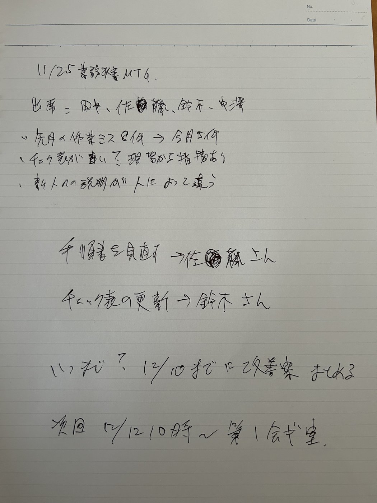

👋 はじめに
- 顧客情報・個人情報・ID・パスワード・機密情報・図面などは入力しない
- AIの回答を鵜呑みにせず、重要なことは人が確認する（安全・品質・法令は特に）
- 会社の利用ルールを守る
📌 今日は実際の会社の資料・図面・データはアップロードしません。このサイトの架空の教材を使います。
今日の流れ
| 14:00〜14:10 | オープニング |
| 14:10〜14:40 | 生成AIの基礎知識・セキュリティ・ログイン |
| 14:40〜15:00 | デモンストレーション |
| 15:00〜15:50 | ハンズオン①（全員共通） |
| 15:50〜16:30 | ハンズオン②（業務別選択） |
| 16:30〜17:00 | なんでも相談会 |
🎬 デモンストレーション
講師は有料版で実演しています。無料版では結果や使える回数が異なる場合があります。
デモ① 手書きの会議メモから議事録を作る


この手書きの会議メモを文字起こししてください。 読み取れない部分や自信がない部分は、推測せず「［読み取り不明］」としてください。
この内容を会議の議事録として整理してください。 「会議名」「日時」「出席者」「現状・課題」「決定事項」「担当者」「期限」「次回予定」に分けてください。 手書きメモに書かれていない情報は推測して補わず、「記載なし」としてください。
✅ 確認ポイント：メモにない担当者や期限を、AIが勝手に補っていないか原本と見比べましょう。
デモ② 会社の規程PDFから必要な情報を探す
添付したPDFは、ある会社の休暇制度ガイドです。このPDFの内容だけを根拠に答えてください。PDFに書かれていないことは「記載なし」と答えてください。回答には、根拠となるページ番号を必ず付けてください。 質問：年次有給休暇はどうやって申請しますか？
半日休暇は取得できますか？午前と午後の時間も教えてください。
急に熱が出て休む場合は、どうすればいいですか？
育児休業は何日取れますか？
✅ 確認ポイント：回答に出たページ番号を、実際のPDFで確かめましょう。
デモ③ 安全啓発ポスターの生成と部分修正
工場で働く人向けに、ヘルメット着用を呼びかける安全啓発ポスターを作ってください。明るく親しみやすいイラスト風で、見出しは「その一瞬に、ヘルメット。」にしてください。縦長でお願いします。
ヘルメットの色だけ黄色に変更してください。ほかは変えないでください。
見出しの文章だけ「かぶって安心、守ってヨシ！」に変更してください。


✅ 確認ポイント：画像の中の文字は崩れることがあります。必ず目で確認しましょう。
✋ ハンズオン① ChatGPTを使ってみよう（全員共通）
答えが隣の人と違っても大丈夫。AIは毎回少しずつ違う答えを作ります。
Step1 質問してみる（作ってもらう）
仕事でのうっかりミスを減らすために、今日からできる工夫を5つ教えてください。
その中で、費用をかけずにすぐ実践できるものはどれですか？理由も教えてください。
Step2 文章を作ってもらう
整理整頓活動のお知らせ文を作ってください。
💬 できた文章の「物足りないところ」を1つ考えてみましょう。
Step3 プロンプトを改善する（整えてもらう）
次の条件で、社内向けのお知らせ文を作ってください。 【目的】職場の整理整頓活動への参加を呼びかけたい 【対象】工場と事務所で働く全社員 【条件】 ・実施日は12月15日（月）16:00〜16:30 ・作業着のままで参加できる ・やさしく前向きな言い方にする 【形式】件名付き、本文200字程度、最後に持ち物を箇条書き
💡 新人さんに仕事を頼むときと同じ。「何のために・誰向けに・どんな条件で・どんな形で」を伝えると上手にやってくれます。
Step4 仕事で使える文章を作る（1つ選んでください）
社内の業務改善会議の案内文を作ってください。 【目的】作業ミスを減らすための意見交換 【対象】各部署の担当者 【条件】日時は12月18日（木）13:30〜14:30、場所は第1会議室、事前に困っていることを1つ考えてきてほしい 【形式】件名付き、本文150字程度
工場の作業を始める前に確認する、一般的なチェックリストを作ってください。 【対象】入社1年目の作業者 【条件】「服装・保護具」「道具」「作業場所」「体調」の4分類で各3項目 【形式】チェック欄付きの表 最終的な内容は会社の正式な手順で確認する前提のたたき台としてください。
新入社員に「なぜ報告・連絡・相談が大切か」を説明する文章を作ってください。 【条件】専門用語を使わず、身近なたとえを1つ入れる 【形式】200字程度、最後に理解を確認する質問を2つ
冬の職場で安全意識を高める朝礼の原稿を作ってください。 【伝えたいこと】足元の凍結による転倒に注意、声をかけ合う、体調が悪いときは無理をしない 【対象】現場で働く社員 【形式】1分で話せる長さ、話し言葉で 具体的な安全対策は会社の規程で確認する前提とします。
Step5 会話しながら仕上げる（考えるのを手伝ってもらう）
もっと短く、要点だけにしてください。
この文章を読んだ人が疑問に思いそうなことを3つ挙げてください。
この文章をより良くするために、私に確認したいことがあれば質問してください。
🌟 早く終わった方へ（追加課題）
今日作った文章を、外国人の同僚にも伝わるやさしい日本語に書き直してください。
今日作った文章を、上司に送るメールの形にしてください。
「仕事のちょっとした困りごと」をAIに相談するとしたら、どう頼めばいいか例を3つ教えてください。
🧩 ハンズオン② 自分の仕事に近いテーマで使ってみよう（選択式）
データはすべて研修用の架空データです。設計担当の方は A・E どちらでもどうぞ。
添付したファイルは研修用の架空データです。内容を読み取り、気づいた傾向や問題点を3〜5つ、分かりやすく整理してください。数字を挙げる場合は、根拠となる行や項目も示してください。
📎 ファイルを添付できないときは：テキスト版を開いて全部コピーし、「以下は研修用の架空データです。」の後に貼り付けて送信してください。
🏭 A：製造・品質管理 金属部品の検査データから不良の傾向を整理します。
不良の原因は断定せずに、品質会議で確認すべき質問を「人・設備・材料・方法」の4つの観点で、それぞれ2つずつ作ってください。
この結果を、上司に報告する200字程度の文章にまとめてください。
📝 回答例を見る（追加指示②の一例）
製品検査データ（11月4日～23日）を分析した結果、検査数8,000個に対し不良数170個、不良率は2.13%でした。特に2ラインは1ラインの約1.9倍、夜勤は日勤の約2.1倍の不良率となっており、バリ不良の多さや11月15日以降の寸法不良の増加が確認されました。
現時点では原因を特定できないため、品質会議にて「人・設備・材料・方法」の4つの観点から作業条件や変更履歴を確認し、追加調査の対象と担当者を決定する予定です。
※回答は人によって違います。これは一例です。「4M分析」は、原因を人・設備・材料・方法の4つの視点で考える品質管理の方法です。
🏗️ B：建設・設備工事 現場の作業メモから、安全確認チェックリストを作ります。
このメモをもとに、明日の作業前に使う安全確認チェックリストを作ってください。チェック欄付きの表で、10項目以内にしてください。会社の正式な手順と照らし合わせて使うたたき台とします。
明日の朝礼で話す1分間の原稿にしてください。新人にも分かる言葉でお願いします。
倉庫棟を利用する人向けに、工事中の注意をお願いするお知らせ文を作ってください。
🗂️ C：総務・管理部門 社内アンケートの結果から、改善提案をまとめます。
評価の低い項目を中心に、すぐできる改善策を3つ提案してください。費用と手間の目安も付けてください。
この評価の平均を部署別に出すには、Excelでどんな関数を使えばよいですか？手順も教えてください。
改善提案を、企画書の骨子（目的・現状・提案・期待される効果）にまとめてください。
📈 D：経営者・管理職 月別の売上・経費から、経営状況を整理します。
売上は増えているのに利益が減っている理由を、データから考えられる範囲で説明してください。断定はせず、確認すべき点も挙げてください。
人手不足と新人育成の課題もあると想定して、今後3か月で取り組める改善案を3つ挙げてください。
🛠️ E：設備保全・点検・技術サービス 設備の点検記録から、報告書を作ります。
この点検記録をもとに、上司に提出する月次の点検報告書を作ってください。「概要」「要観察の設備」「対応が必要な事項」「次回の確認事項」に分けてください。
この報告書を読んで、担当者に確認すべき質問を5つ挙げてください。
点検者が交代しても記録が引き継がれるように、点検記録の書き方の改善案を出してください。
✅ AIが「原因は〇〇です」と言い切ったら、「データから本当にそう言える？」と考えてみましょう。数字はExcelで元データと確かめるのがおすすめです。
🆘 うまくいかないとき
| こんなとき | こうしてみましょう |
|---|---|
| ファイルをアップロードできない／上限の表示が出た | テキスト版をコピーして貼り付ける |
| エラーが出た・反応がない | 新しいチャットを開いてやり直す |
| 会社のパソコンでつながらない | スマートフォンのChatGPTアプリで進める |
| 改行したいのに送信されてしまう | Shift＋Enterで改行できます |
| 回答が見本と違う | それで正常です。AIは毎回少しずつ違う答えを作ります |
| 分からなくなった | 遠慮なく手を挙げてください。スタッフがお手伝いします |